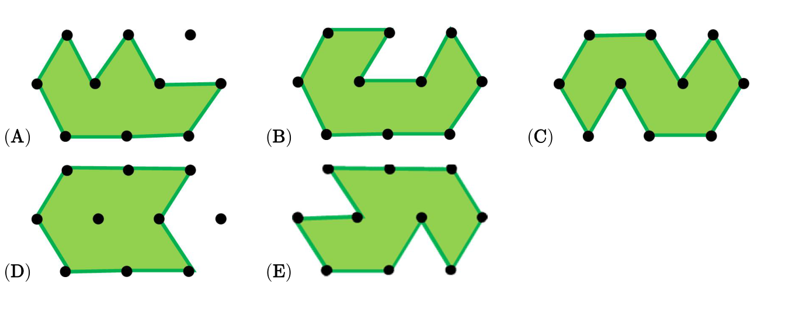

下面哪块草地面积最小？（可以把点连成相同大小的三角形来比较）
Which lawn has the smallest area? (Connect dots to compare equal triangles.)

先点选一块草地，再点下方小格标记「一个单位面积」。数每块标记了几个，找出最小的，再选 A–E。
Pick a lawn, tap unit cells below to mark area. Count each lawn's units, find the smallest, pick A–E.
我的答案
My answer